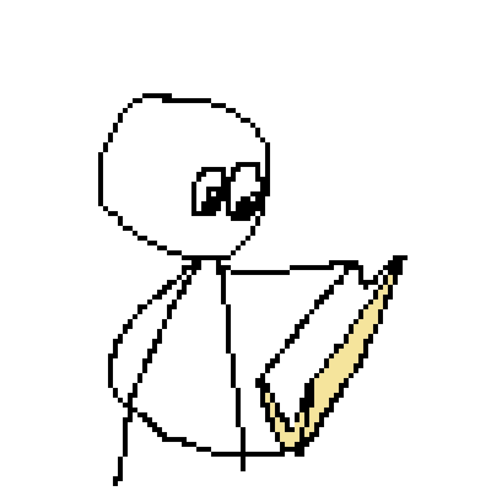

Home of finished/old/not being worked on anymore projects that i wanted to archive here

Program/Game Archives
Grimbos fun adventure/grimbo.exe
- Download link
joke project to make fun of a kid i idint like i worked largley with 5lows to do all the art. there was alot more planned for this game but it got canned cuz i lost intrest in it lmaooo so it lives on as a shitpost made in about a week
VS Grimbo
- Download link
Another shitpost project with some more effort put into it, art was done by soem friends and the music was made by furretloops, once again made to make fun of a kid i rlly didint like, i honsetly quite enjoy this one lookin back on it
Web Archives
PlaneHub.org
- PlaneHub Home
Plane hub was some cps project about making a shopping website, i did have a partner for this one so thats why some of the humor isnt what you expect lmao.
i have also went in and fixed some of the fucked up formating and edited some of the descriptions
Mysupercoolawesomewebsite
- MyCoolwebsite
first ever website i made, has a few games on it i made,and like one i didint. has just been rotting away for a while i did use it as a test website tho so thats something :/
Twaddle
- Twaddle 2024
Among the first true projects i have completed. Done for a 2024 School Stem festival and made in under 3 weeks. Mainly inspired by warioware and that one password game thing on neal.fun, due for a remake lmao